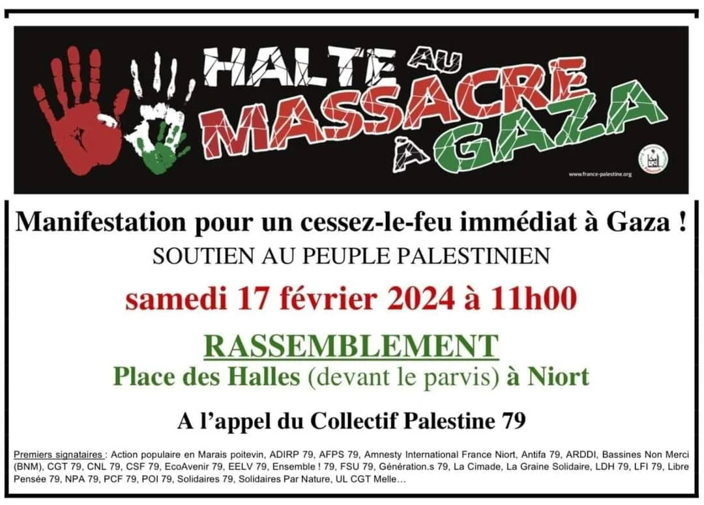

Appel archivé
Gaza. Appel à Niort pour un cessez-le-feu immédiat le 17 février 2024
Date indiquée par Facebook · 16 février 2024
Repères éditoriaux
Le Collectif Palestine 79 appelait à se rassembler le samedi 17 février 2024 à 11 h devant le parvis des Halles, à Niort. Notre fédération figure parmi les premiers signataires de l’appel en soutien au peuple palestinien.

Sources
Archive rouge · document diffusé sur Facebook · AR-0002-FB-01475
À lire aussi · Au Clou-Bouchet, appel à un cessez-le-feu immédiat le 11 novembre 2023